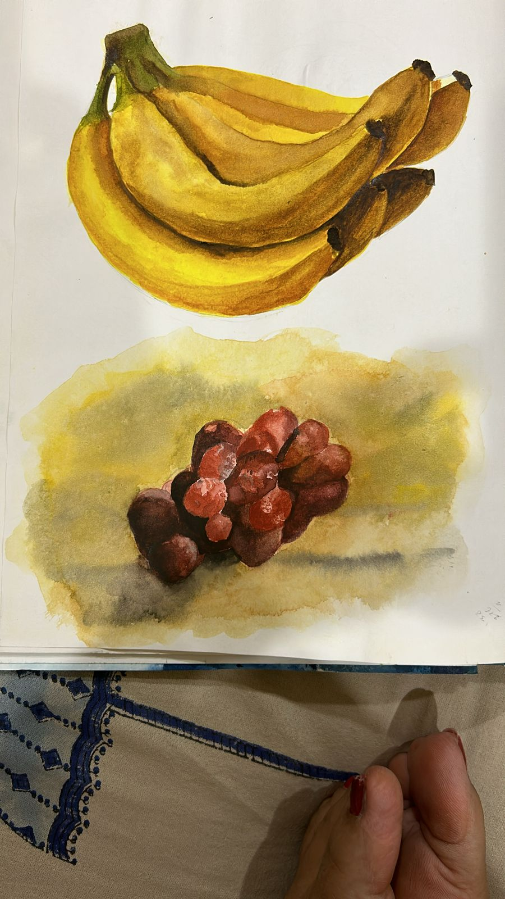
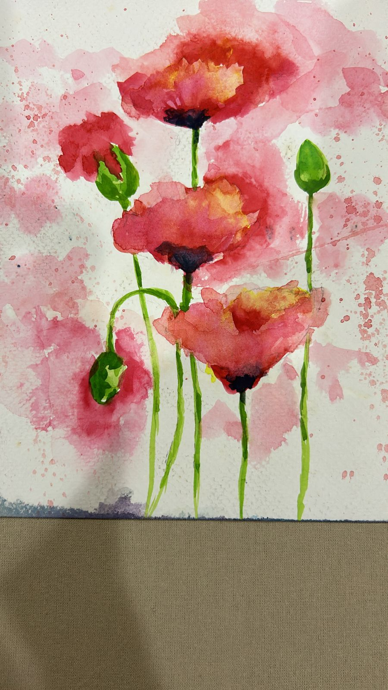
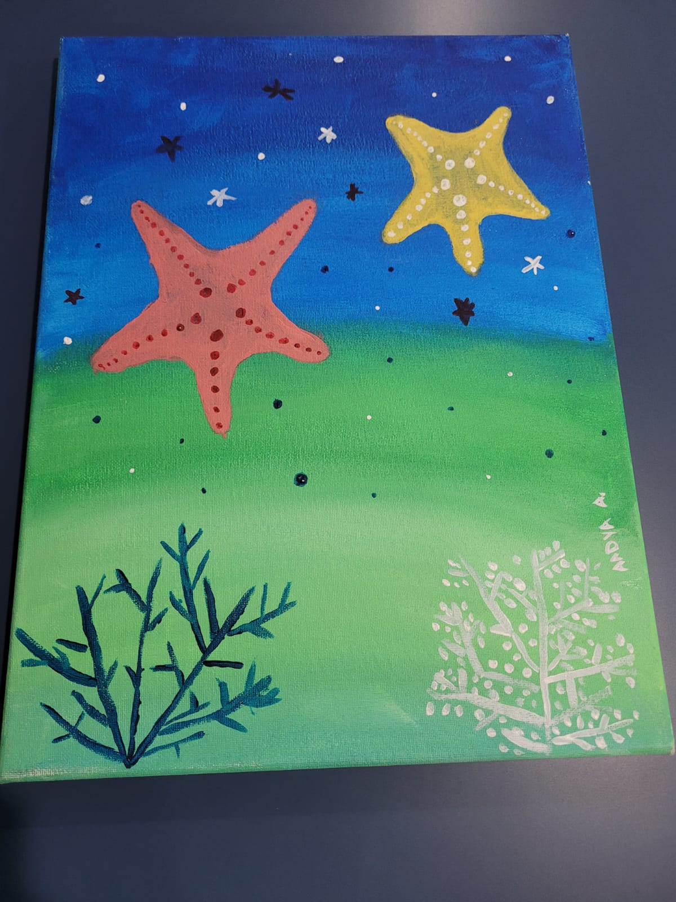
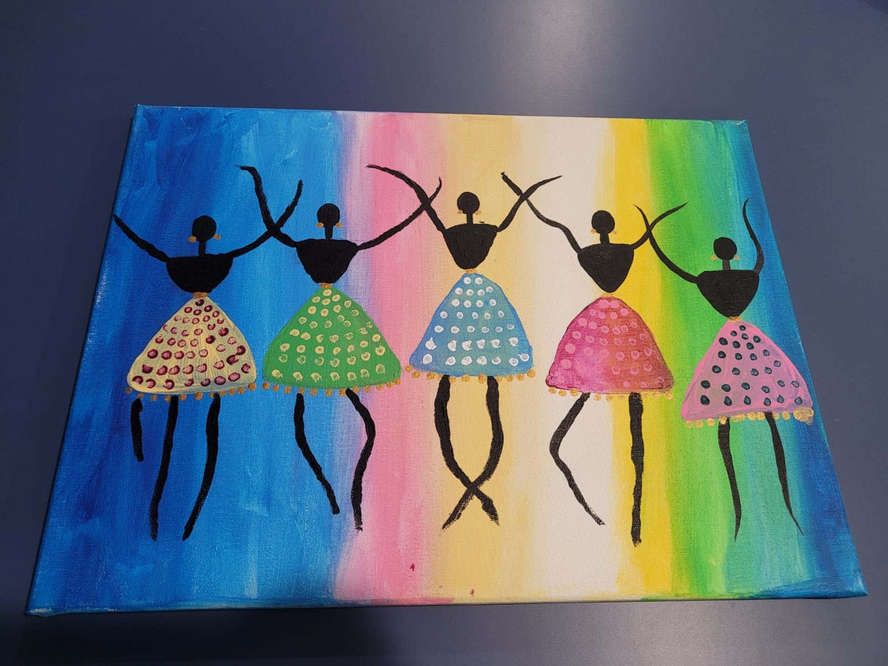
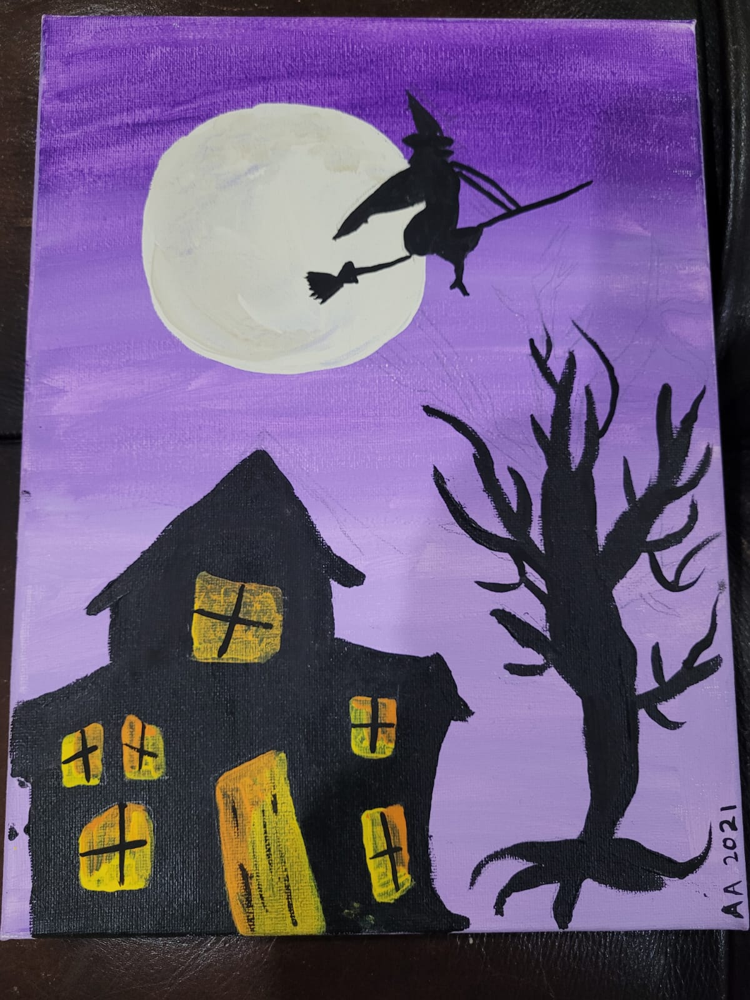
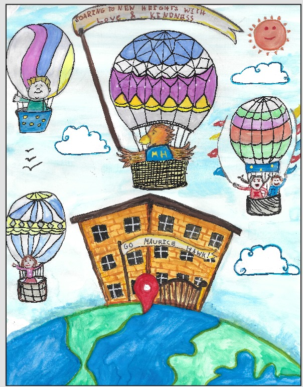
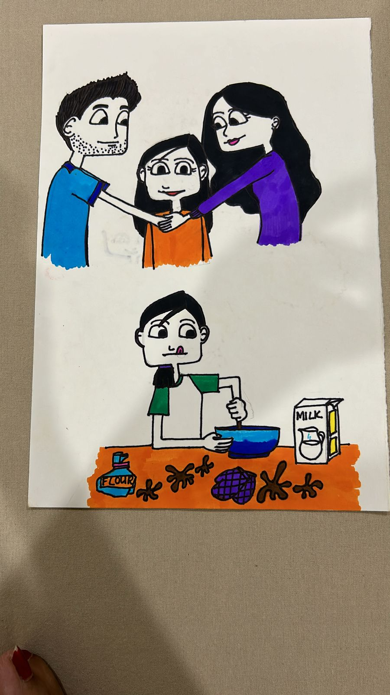
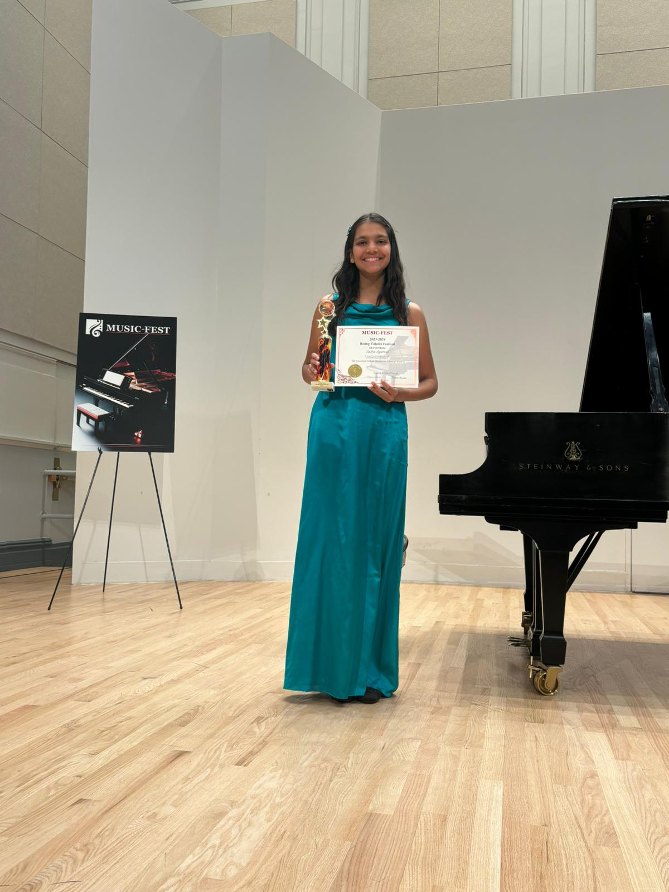
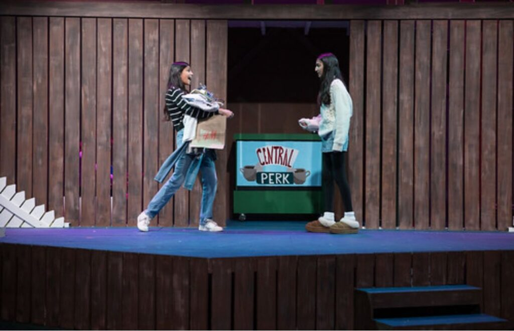
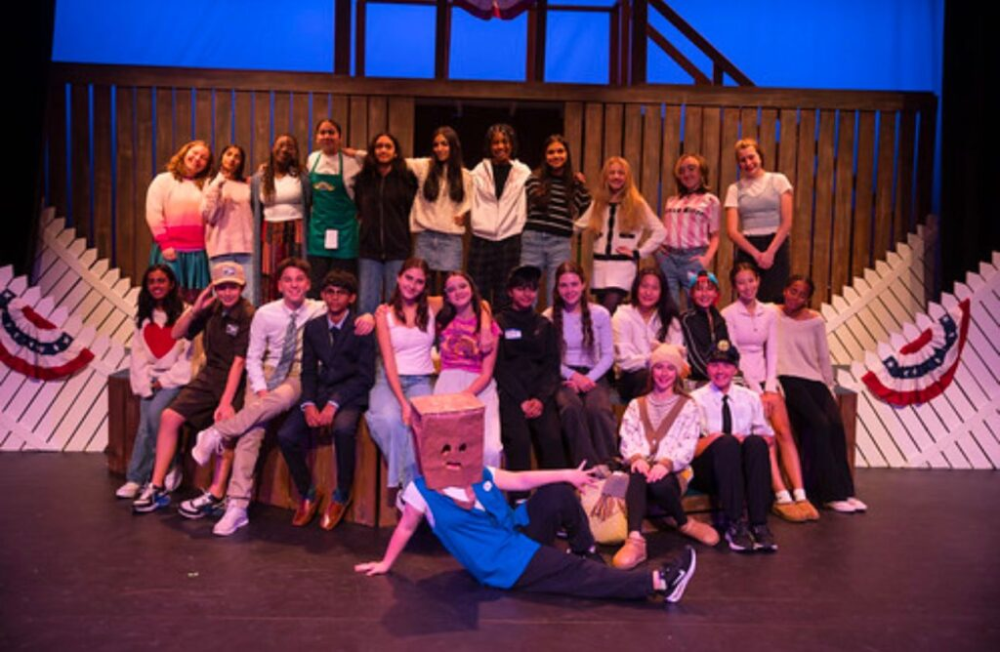

Moral Philosophy, Poetic Form & Classical Art
Exploring human consciousness, classical musical nuance, expressive visual arts, and philosophical inquiry alongside technical engineering disciplines.
Visual Art Gallery • Drawings, Paintings & Studies
Acrylic, watercolor, and pen studies capturing botanical form, natural light, wildlife, spiritual tranquility, and contest-winning cover designs.

+Still Life: Fresh Fruits (2024)
Acrylic on canvas capturing natural light, organic texture, and form.

+Botanical Study: Red Flowers (2023)
Vibrant floral composition exploring color harmony and botanical depth.

+Meditative Serenity: Buddha (2021)
Intricate tonal study of calm, contemplation, and classical line work.

+Rhythm & Movement: Dancing Girls
Dynamic figurative study celebrating grace, movement, and choreography.

+Avian Wildlife: Perched Bird (2022)
Fine feather realism and organic branch textures.
 +
+
Illumination: Candle Light (2021)
Chiaroscuro study of ambient light, flame dynamics, and shadows.

+Yearbook Cover Winner: Balloons (2020)
1st Place Winner for School Yearbook Cover design in 3rd grade.

+The Joy of Baking: Whimsical Caricature
Playful expressive illustration celebrating the humor and joy of baking.
Flute Recitals & Manhattan School of Music Piano Soloist
First Chair Flutist, studio recitalist, and Grand Prize Winner at the Music-Fest International Rising Talent Festival.
 +
+
Flute Studio Recital • Summer 2024
Solo performance with piano accompaniment (Joseph Kosma, Ian Denley).
 +
+
First Chair Flutist • Advanced Band
First Chair Flutist in 8th grade; school advanced band member since 5th grade.
 +
+
Music Therapy for Seniors at Artis
Bringing live classical flute performances to senior living residents.

+Manhattan School of Music Soloist
Grand Prize recital performance at Greenfield Hall, MSM New York.
 +
+
Music-Fest International Rising Talent Festival
Grand Prize Winner performing Chopin Waltz in B Minor Op. 69 No. 2.
 +
+
Music-Fest Grand Prize Ceremony
Grand Prize trophy presentation at Manhattan School of Music.
 +
+
NJMTA Flute Honors Recital • 2024
New Jersey Music Teachers Association Honors Award for Flute.
NSF National Public Speaking Champion (1st Place) • Toastmasters
1st Place National Public Speaking Champion in North South Foundation, Model Speaker at ETS Youth Leadership, and McCarter Theater dramatist.
NSF National Champion • 1st Place
Award Certificate of Learning Journey Excellence, 1st position nationwide.

+NSF National Trophy Ceremony
Receiving the 1st place championship trophy for impromptu speech on civic service.

+ETS Toastmasters • Model Speaker
Selected as Model Speaker and Outstanding Communicator Award honoree.